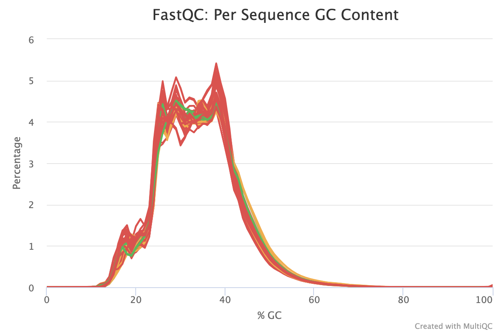

Write up for this github issue
Github repo available here but each step’s chunk is also linked in workflow write up.
The Data
The RNA-seq data that was analyzed for this issue was from manila clam (Ruditapes philippinarum) samples of a control and treatment group. There were 15 control samples and 15 treatment samples, each with 2 reads. Each fasta file had the naming scheme M-?-###_R#_001 where ? = C (control) or T(treatment), ### = sample number, and R# = R1 (read 1) or R2 (read 2). Raw files can be found here.
The Workflow
Retrieving Files From Gannet
To start the analysis, I retrieved the raw reads from gannet using wget.
Checking File Integrity via MD5sums
Typically, the next step would be to check the file integrity by comparing the md5sums of the downloaded files with those on the remote server (gannet). However, the directory containing our reads did not have a text file of the md5sums for me to run md5sum on. So we skipped this step.
FastQC and MultiQC
The next step was to evaluate the quality of our sequences using FastQC and MultiQC. I generated a FastQC file for each of the reads, and then combined all of those using MultiQC to look at the quality of all of our reads together. The MultiQC report can be found here (note to view the “pretty version” you will need to download the html file and open the local file since github just shows the raw). Here’s some of the results from that:




Software Used:
- FastQC (v0.12.1)
Psuedo Alignment with Kallisto
Next I pseudo aligned the reads and quantified expression using Kallisto. I did not trim prior to this as it is not wholly necessary for pseudo alignment. An index for alignment and quantification was created using a reference transcriptome for Ruditapes philippinarum (note: ensure to select for RNA file). Paired end reads for each sample were then aligned and quantified against this index.
Following pseudo alignment and quantification, a trinity matrix was created with the Kallisto output to build an abundance matrix.
Software Used:
Kallisto (Linux)(v0.50.1)
TrinityRNAseq (v2.12.0)
Differential Expression and Visualization with DESeq2
Using the quantification in the trinity matrix created, I ran DESeq2 to show deferentially expressed genes, and filtering for those who’s expression showed a difference with a p value <= 0.05. Differential expression was also visualized via a volcano plot and heatmap of the top 25 deferentially expressed genes)
Along with the visualzations, I created a dataframe with the differentially expressed genes and associated statistics (base mean, log 2fold change, lfcSE, stat, pvalue, padj) and saved as a tab file for the next steps.
Software used:
BiocManager (v1.30.22)
DESeq2 (v1.38.3)
pheatmap (v1.0.12)
Identifying DEG Functions with Blastx
Once we had a tab file with differentially expressed genes, we could run blast on our reference genome (note: be sure to select for RNA file). Doing this creates a list of all of the genes (and gene short names) in our reference genome for us to get the names of our DEGs in the next step.
Software used:
- NCBI Blast (v2.11.0)
Joining DEG with Blast Results and UniProt Gene Ontology Annotations
Using the file created from the reference genome Blast, I combined the Blast results with the DEG file by the common gene names. This dataframe contained the gene ID, gene short name, base mean, log 2fold change, pvalue, and padj. I isolated the UniProt IDs from the gene short names in order to retrieve the gene ontology (GO) annotations of interest.
I looked up the annotations on UniProt’s web interface and saved the output as a tab file. Finally, I merged the Blast/DEG data frame with the GO data frame by the common UniProt ID’s/Entries to get a file of our GO annotations for the significantly deferentially expressed genes. The annotation file is available here.
General (non-step specific) software and hardware info:
Computer: 2016 MacBook Pro 8GB 13” with macOS Big Sur (v11.2)
IDE: R Studio (v4.2.3)(via raven)